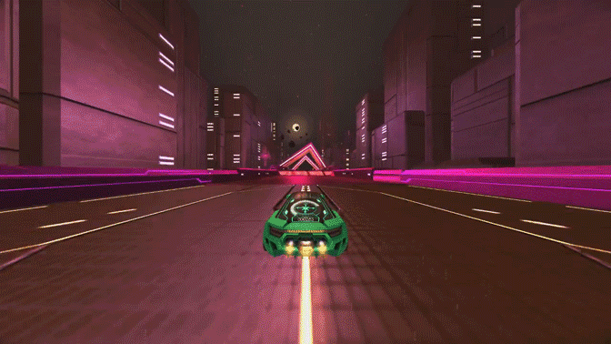
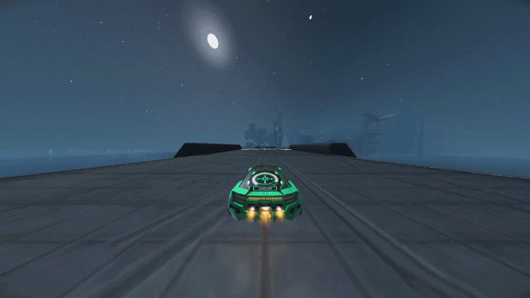
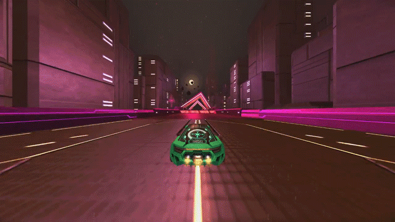
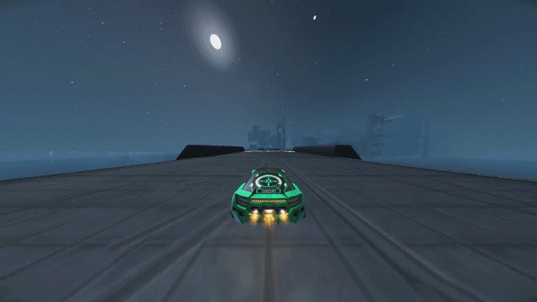

A Guide To Most Distance Mechanics
> Not Wheelie Boosting
There are some speed strats that are similar to wheelie boosting, but are not. A fast hop over a barrier like this for example,

isn't wheelie boost.
A fast fall like this is also not wheelie boost, and is actually a speed strat that you can use to retain more speed:

Also, in any situation where a jump would be faster anyways to get to where you want to go, you can do the wheelie boost motion and it will not count as a wheelie boost.
Like in cases like this:



You can also fast fall in cases like this for extra speed:

In cases like this, I personally count it as a wheelieboost, since a jump is not needed anyways, but some others don't consider it one (it's a little hard to see, but in the gif below, I jump down a ledge):


isn't wheelie boost.
A fast fall like this is also not wheelie boost, and is actually a speed strat that you can use to retain more speed:
Also, in any situation where a jump would be faster anyways to get to where you want to go, you can do the wheelie boost motion and it will not count as a wheelie boost.
Like in cases like this:

You can also fast fall in cases like this for extra speed:
In cases like this, I personally count it as a wheelieboost, since a jump is not needed anyways, but some others don't consider it one (it's a little hard to see, but in the gif below, I jump down a ledge):